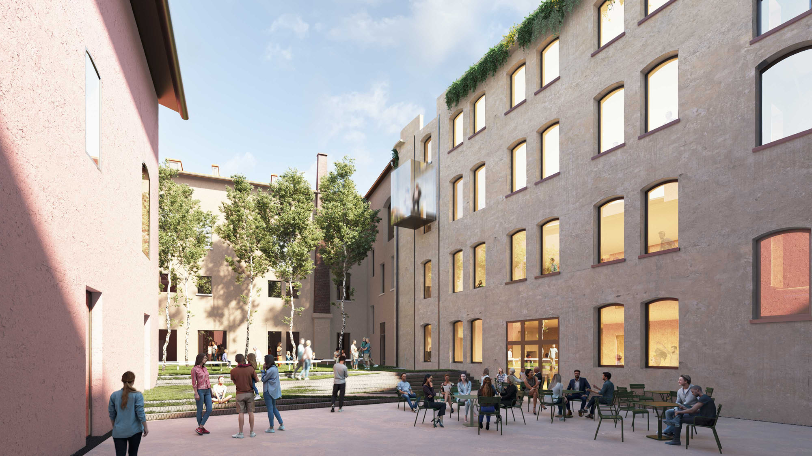

Çek mimarlık ofisi QARTA Architektura, Kladno şehrinde Brethran kilisesi için topluluk merkezi tasarladıCRA-Carlo Ratti Associati ve Italo Rota, İtalya'nın Modena kentindeki eski bir hastane kompleksini ülkenin en önemli kültürel ve inovasyon merkezlerinden birine dönüştürmek için bir proje geliştirdi. Tasarım, CRA ve sanatçı-mühendis Chuck Hoberman tarafından tasarlanan, origami benzeri hareketli çatı, üçgen şekilli meydanın üstünü örtüyor..
AGO Modena Fabbriche Culturali ismi verilen yeni merkezle, kültürel mirasın restorasyonuna yönelik yeni bir yaklaşım öneriliyor ve bu yaklaşım, yapıya gelecekteki değişen konfigürasyonlara uyum sağlama esnekliği sağlıyor.
TCRA ve Italo Rota’nın 20.000 metrekarelik projesi, mimari koruma uygulamalarını normalde geçici enstalasyonlarda kullanılan kinetik mimarinin dönüştürücü nitelikleriyle eşleştiren deneysel bir tasarım yaklaşımı izliyor.
Kinetik çatının hafif ve katlanabilir olması, origami gibi kolayca açılıp kapanması, uzun süredir ihmal edilen bu avluyu çeşitli iklim koşullarına ve işlevlerine uyum sağlayabilen bir sosyal alana dönüştürüyor. Komplekse güç sağlamak için güneş enerjisini toplamak üzere yeni yapıya fotovoltaik paneller de kurulması planlanıyor. Çatı, CRA ile dinamik yapı tasarımında dünyanın önde gelen uzmanlarından biri ve Amerikan uzay ajansı NASA ile eski bir işbirliğinde çalışan Hoberman’ın ortak yapımı.
Ziyaretçiler, adını ayırt edici kıskaç benzeri tonozlarından alan etkileyici “Tenaglie” koridorlarından geçerek baca avlusuna ulaşıyor. Burada, başka bir kinetik enstalasyon, insanları yeni bir çatı terasına götürüyor, şimdi Modena’nın eski ev çatılarının ve kilise kubbelerinin kuşbakışı manzarasının keyfini çıkarabileceğiniz bir bahçeye dönüştürülmüş.
AGO’nun bulunduğu alan, UNESCO Dünya Mirası listesinin bir parçası olan Modena’nın Orta Çağ şehir merkezinin girişinde yer alıyor. Eski yapı, yerel Sant’Agostino Hastanesi işlevine işaret eden bir sadelik duygusuyla 18. yüzyılın ortalarında inşa edilmiş. Daha önce gerçekleştirilmemiş bir restorasyon projesi, 2012 yılında mimar Gae Aulenti tarafından hazırlanmış. AGO Modena Fabbriche Culturali tamamlandığında görsel sanatlar, dijital kültür ve eğitim alanında çalışan çeşitli kurumları birleştiren bir nokta haline gelecek. Modena Belediyesi, Modena Fondazione di Modena ve Modena ve Reggio Emilia Üniversitesi tarafından kurulan AGO, Modena Visual Arts Foundation, koleksiyon kartlarına adanmış Museo della Figurina ve Interdepartmental Research Center on Digital Humanities dahil olmak üzere birçok disiplinden çok sayıda kuruluşa ev sahipliği yapacak.